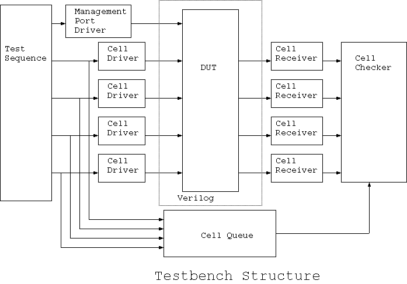

2. 設計検証の環境
この例は、単独のDUTを用いる検証なので、Verilogテストベンチ (squat_test.v) は、一つのsquat (DUT)の インスタンスと一つのJedaモジュールのインスタンスで構成されています。 このテストベンチは、Jetaテンプレートジェネレータ jedatempプログラムによって自動生成されました。このプロセスは、 5.Portsetの作成にて、説明します。Jeda側のテストベンチの構造を、下図に示します。

以下の章では、テストベンチを構成する各種の要素を作成する方法を、順を追って説明します。